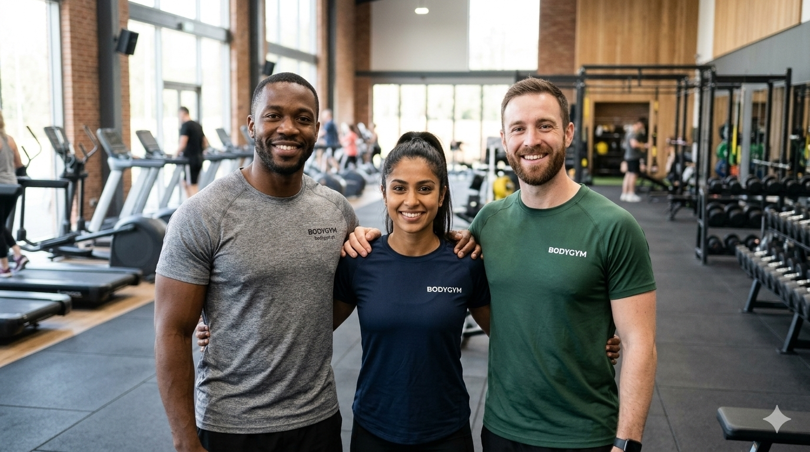

Carlos Silva
Instrutor de Musculação e Preparador Físico certificado.
O BODYGYM nasceu em Vila Cácia com o objetivo de proporcionar à comunidade local um espaço acessível, seguro e motivador para a prática desportiva.
Desde a abertura, temos ajudado dezenas de moradores a atingir os seus objetivos de saúde, perda de peso e ganho de massa muscular.

Instrutor de Musculação e Preparador Físico certificado.
Instrutora de Zumba, Aeróbica e Treino Funcional.
Aconselhamento em Nutrição Desportiva e Bem-Estar.
Promoção de hábitos saudáveis de forma sustentável e segura.
Um ambiente de respeito, entreajuda e motivação constante.
Foco nos resultados e na evolução individual de cada sócio.